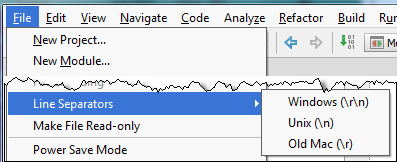

You do not need to open a file in the editor to change its line separator style. Use the Project tool window instead: select one or more files, or folders, point to File | Line Separators on the main menu, and then choose the desired line ending style.
For a directory, new line separator applies recursively.
